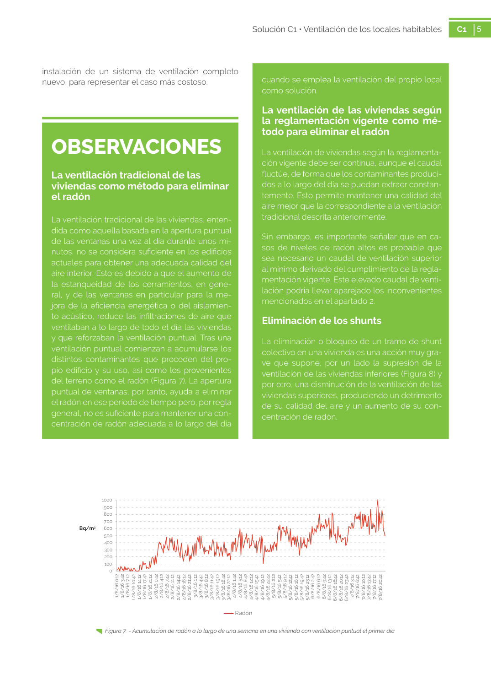

GUIA · viviendas como método para eliminar el radón · versión sin-fecha · capa guia
Formatos: JSON compacto · Markdown · PDF fuente
Ámbito del documento · texto del ámbito · documento y tablas
Tipo: figuras · nivel 3 · sección estimada: 7. COSTE · padre: a0222
viviendas como método para eliminar el radón el radón La ventilación tradicional de las viviendas, enten dida como aquella basada en la apertura puntual de las ventanas una vez al día durante unos mi nutos, no se considera suficiente en los edificios actuales para obtener una adecuada calidad del aire interior. Esto es debido a que el aumento de la estanqueidad de los cerramientos, en gene ral, y de las ventanas en particular para la me jora de la eficiencia energética o del aislamien to acústico, reduce las infiltraciones de aire que ventilaban a lo largo de todo el día las viviendas y que reforzaban la ventilación puntual. Tras una ventilación puntual comienzan a acumularse los distintos contaminantes que proceden del pro pio edificio y su uso, así como los provenientes del terreno como el radón (Figura 7). La apertura puntual de ventanas, por tanto, ayuda a eliminar el radón en ese período de tiempo pero, por regla general, no es suficiente para mantener una con centración de radón adecuada a lo largo del día cuando se emplea la ventilación del propio local como solución.

PDF fuente redistribuible: copia fiel enlazada en esta página (SHA256 verificado).